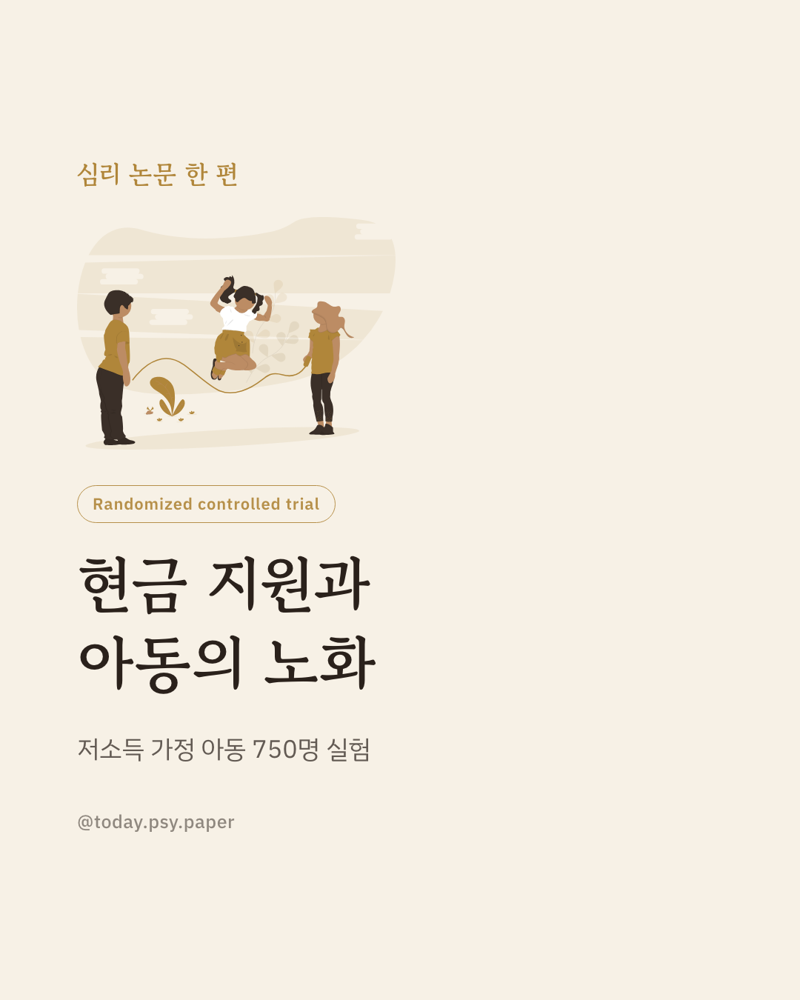
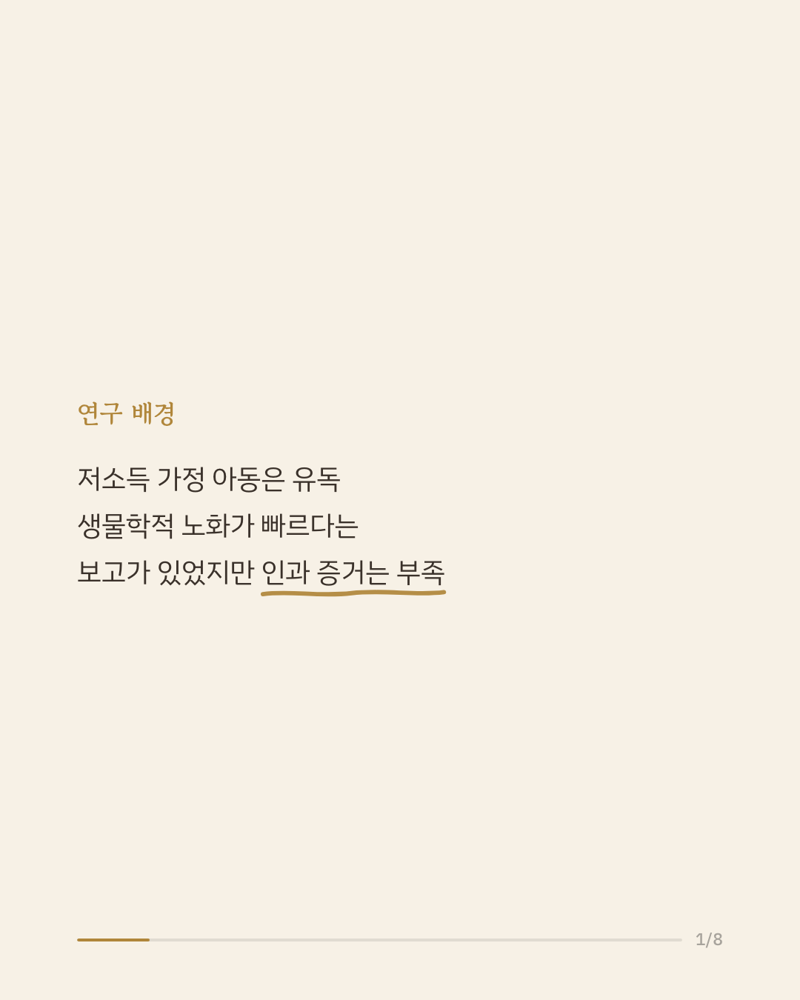
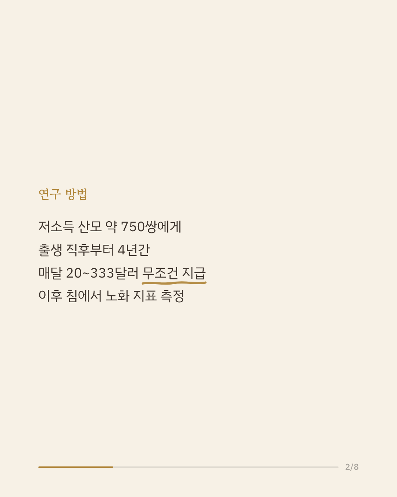
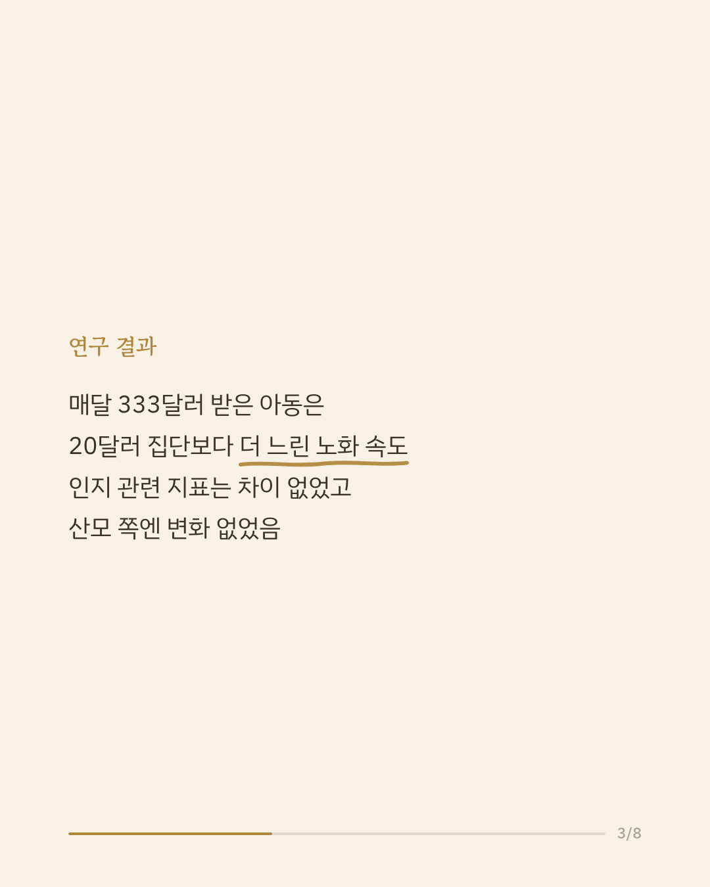
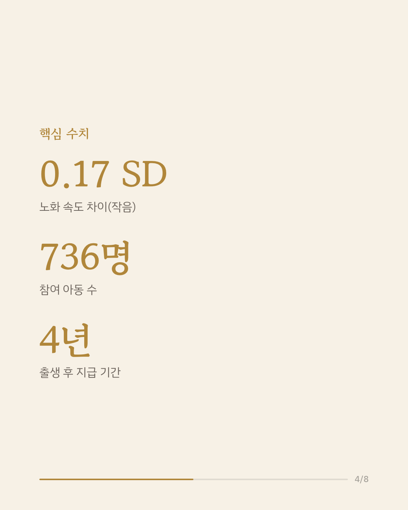
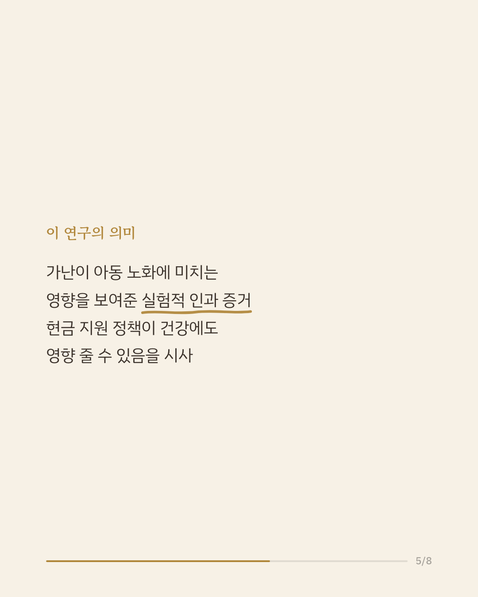
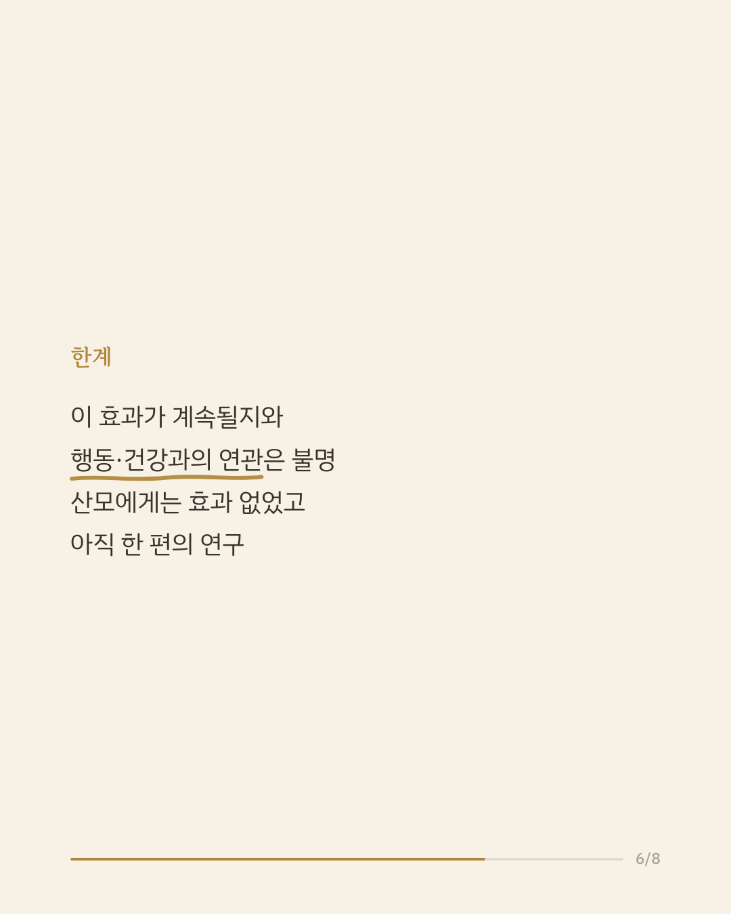
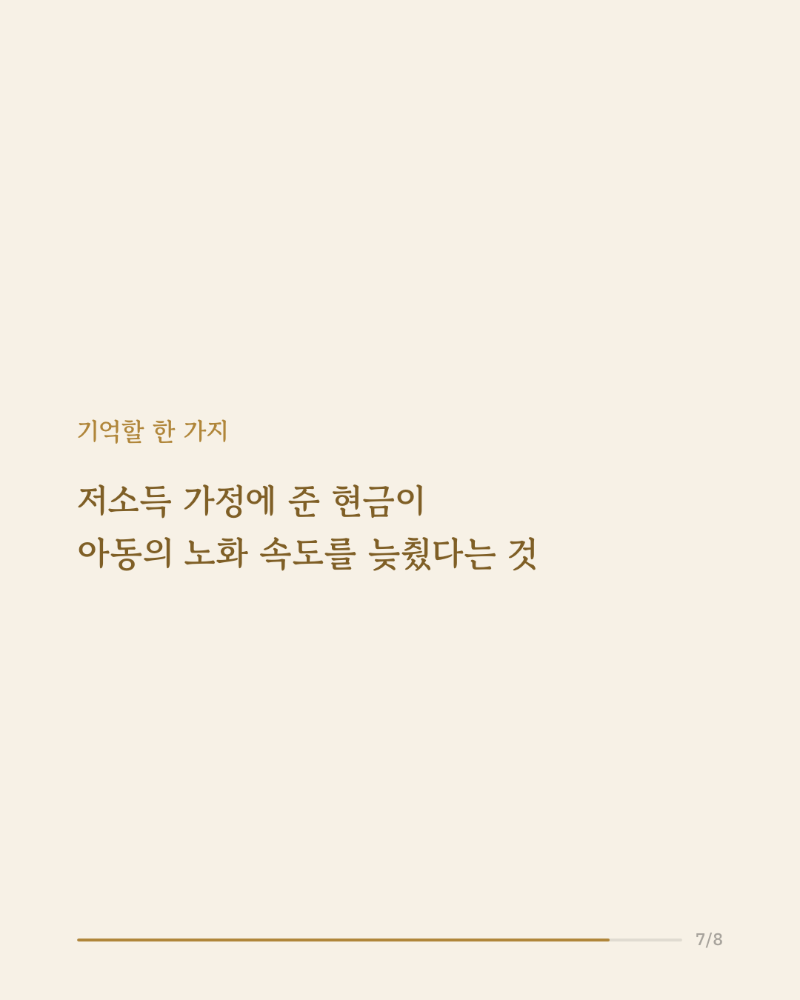
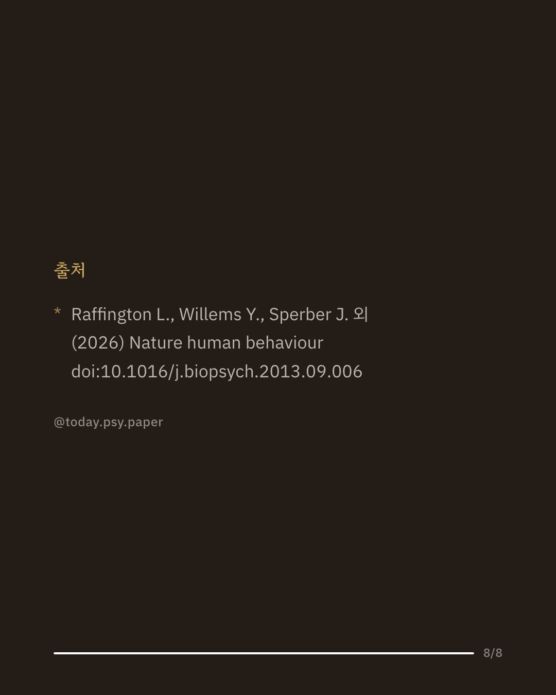

어린 시절의 가난은 아동 발달에 오랫동안 그림자를 남긴다고 알려져 있습니다. 가난한 환경에서 자란 아동일수록 몸이 생물학적으로 더 빨리 늙는다는 보고도 있었지만, 이는 대부분 상관관계 연구였습니다. 이번 연구팀은 미국의 저소득 산모 약 750쌍을 대상으로, 아동이 태어난 직후부터 4년간 매달 무조건 현금을 지급하는 무작위 대조 실험을 진행했습니다. 한 집단에는 매달 333달러, 다른 집단에는 매달 20달러를 지급하고, 4년 뒤 아동의 침에서 DNA메틸화 기반 생체지표를 측정했습니다. 그 결과 더 많은 현금을 받은 아동은 적게 받은 아동보다 노화 속도(DunedinPACE)가 유의하게 느렸습니다(약 0.17 표준편차 차이). 다만 인지 능력과 관련된 생체지표에서는 뚜렷한 차이가 나타나지 않았고, 산모 자신에게서는 어떤 지표에서도 현금 지원의 효과가 확인되지 않았습니다. 이 연구는 가난이 생물학적 노화에 영향을 미칠 가능성을 무작위 실험으로 보여준 드문 사례로, 빈곤 완화 정책이 아동의 몸에도 흔적을 남길 수 있음을 시사합니다. 다만 이 효과가 이후 실제 행동이나 건강 문제로 이어지는지는 아직 알 수 없고, 아동이 더 자란 뒤까지 추적한 결과도 아닙니다. 단일 연구이므로 확대 해석은 조심해야 합니다. 출처: Nature Human Behaviour (2026), 'Effects of a randomized controlled trial of unconditional cash transfers on epigenetic measures of ageing and cognition in children and mothers' #아동발달 #빈곤연구 #후성유전학 #심리학연구 #논문리뷰
python3 publish.py 42711377